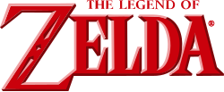

A Lenda de Zelda
The Legend of Zelda (ゼルダの伝説, Zeruda no Densetsu) é uma série de jogos eletrônicos de ação-aventura com alguns elementos de RPG, criada pela Nintendo em 1986 por Shigeru Miyamoto e Takashi Tezuka exclusivamente para os consoles da Nintendo. A maioria de seus títulos são produzidos e publicados pela Nintendo com alguns jogos portáteis e relançamentos sendo terceirizados pela Flagship, Vanpool, Grezzo e Tantalus Media. Os jogos da série se passam no reino de Hyrule, num cenário de fantasia. A franquia concentra-se em títulos focados no gênero ação e aventura, além de RPG de ação e com resolução de quebra-cabeças.
A série é protagonizada por Link; um jovem herói pertencente a raça Hylian, essa raça constitui de um povo com orelhas grandes e pontudas semelhantes a elfos. O herói possui um vínculo próximo com a Princesa Zelda; uma reencarnação da deusa Hylia e também princesa do reino de Hyrule. Cada jogo possui uma história e um objetivo únicos. Apesar de que frequentemente o objetivo principal de Link nos jogos seja retratado como um herói protetor do reino de Hyrule e da Triforce, do antagonista Ganon. A Triforce é uma relíquia deixada pelas deusas criadoras do reino: Din, Farore e Nayru, representado as virtudes da Coragem, Sabedoria e Poder respectivamente.
Desde que o jogo homônimo foi lançado em 1986, a série expandiu-se em 20 jogos principais em todos os consoles de jogos da Nintendo, além de uma série de spin-offs. Uma série animada baseada nos primeiros jogos foi exibida em 1989 e adaptações de mangá foram comercializadas no Japão sob encomenda da Nintendo. The Legend of Zelda é uma das franquias mais influentes, revolucionárias e bem sucedidas da Nintendo; muitos de seus jogos foram bem-sucedidos comercialmente e são considerados alguns dos melhores jogos eletrônicos de todos os tempos.
Visão Geral
Jogabilidade
Os primeiros jogos da série apresentam uma mistura de gêneros que envolvem quebra-cabeças, ação e aventura, exploração e RPG. Esses elementos foram permanecidos constantes ao longo da série mas com refinamentos e novas adições apresentados em cada novo jogo. Os jogos tridimensionais da série também incluem uma jogabilidade furtiva, onde o jogador deve evitar certos inimigos enquanto prossegue no cenário, também possui elementos de corrida e montaria de cavalos. O jogador é frequentemente recompensado com itens ou habilidades para resolver quebra-cabeças ou explorar áreas ocultas. Alguns itens são recorrentes e aparecem muitas vezes ao longo da série como bombas e flores de bomba; bumerangues, que podem matar ou paralisar inimigos; chaves para portas trancadas; espadas, escudos, arcos e flechas, enquanto outros itens são exclusivos de um único jogo. Apesar de certos jogos possuírem muitos elementos de RPG (Zelda II: The Adventure of Link por exemplo, é o único título com um sistema de experiência), os desenvolvedores enfatizam o combate direto estilo hack and slash. Esses elementos de RPG, levaram a muito debate sobre os gêneros dos jogos da franquia se poderiam ou não ser classificados como jogos de RPG de ação, um gênero no qual a série teve uma forte influência
Cada jogo da série principal consiste em três áreas principais: um overworld que conecta todas as outras áreas, permitindo se movimentar para onde quiser; "áreas de interação" com outros personagens (cavernas ou salas escondidas no caso do primeiro jogo; cidades inteiras e vilas em jogos posteriores) em que o jogador ganha itens ou informações essenciais, é possível comprar equipamentos ou completar algumas missões secundárias; e masmorras (dungeons), que são labirintos, geralmente subterrâneos, compreendendo uma ampla gama de inimigos, chefes, itens e habilidades novas. Cada masmorra geralmente tem um item importante dentro, que pode ser essencial para resolver muitos dos quebra-cabeças e muitas vezes desempenha um papel crucial na derrota de um chefe dessa masmorra, bem como para progressão do jogo. Em quase todos os jogos da franquia, explorar masmorras é auxiliado pela localização de um mapa, que revela seu layout, e uma bússola mágica, que revela a localização de itens importantes, como chaves e equipamentos. Nos jogos posteriores, o calabouço inclui uma "grande chave" especial que abrirá a porta para combater o chefe da masmorra.
Audio
Os jogos da série The Legend of Zelda apresentam instrumentos musicais, especialmente no momento de resolução de quebra-cabeças. Frequentemente, os instrumentos acionam eventos do jogo. Em Ocarina of Time, o jogador precisa criar composições musicais para revelar certos enigmas e também para progredir no jogo, tudo isso usando uma ocarina como instrumento e os controles do joystick para a composição. Ocarina of Time é "primeiros títulos não-musicas contemporâneos a apresentar a composição de uma música como parte da jogabilidade". As músicas são usadas de forma heurística pois são necessárias para concluir o jogo - essa mecânica também está presente em Majora's Mask..
"The Legend of Zelda Theme" é um dos temas musicais mais populares da franquia e foi desenvolvido para o primeiro jogo. O diretor e compositor da série, Koji Kondo, inicialmente planejava usar a música Maurice Ravel 's Boléro como tema do título do jogo mas foi forçado a alterá-lo quando soube que os direitos autorais para a orquestra ainda não tinham sido expirados. Kondo escreveu um novo arranjo do tema para o jogo. "Zelda Theme" está no entre um dos temas mais conhecidos no mundo dos videogames.
Até o lançamento de Breath of the Wild, a série The Legend of Zelda evitava usar dublagem em cenas faladas, utilizando apenas diálogos escritos. O produtor da série Eiji Aonuma afirmou anteriormente que como Link é um personagem totalmente mudo, a introdução de personagens com diálogos falados "seria um pouco desanimador". Em vez de utilizar a música tema para locais diferentes, Breath of the Wild utiliza um som ambiente na jogatina como trilha sonora, além de acordes de piano.
Cronologia
A cronologia sempre foi um ponto de debate entre os fãs da série. Entretanto, alguns episódios fizeram que alguns pontos são aceitos pela maioria dos fãs. Certamente, existem vários Links, em tempos diferentes que são encarregados de salvar Hyrule. Em 2011, em comemoração dos 25 anos da série, a Nintendo lançou o livro Hyrule Historia,[8] nele a cronologia oficial da série é revelada.Resumidamente, a história do jogo The Legend of Zelda começa em Skyward Sword, onde mostra que Link é de um reino acima das nuvens chamado de Skyloft e mostra a origem de sua espada a Master Sword , criada por Zelda para que Link derrotasse o vilão Demise. Depois de seus acontecimentos um reino é criado e chamado de Hyrule. Em seguida a historia é feita pelo jogo The Minish Cap que conta a origem de Vaati, o vilão de Four Swords que é o próximo jogo da linha do tempo oficial da serie. No jogo Link tem que ir atrás de Vaati que capturou a princesa Zelda. Com isso Link conta com a ajuda da Four Sword, uma espada que transforma ele em 4 versões de si mesmo (verde, vermelho, azul e roxo). Após os acontecimentos de Four Swords chegamos a Ocarina of Time. No jogo, uma nova encarnação de Link tem que impedir que Ganondorf pegue a Triforce, e para isso Link tem que buscar as três relíquias que juntas dão acesso ao Temple of Time onde está a Master Sword. Esses acontecimentos acabam arruinando Hyrule, então Link viaja entre dois tempos para acordar os 7 sábios e então conseguir forças para derrotar Ganondorf.
Ao final de Ocarina of Time é criada 3 linhas do tempo diferentes. Na primeira, Link não derrota Ganondorf, morrendo na batalha. Em outra, Link derrota Ganondorf e é enviado pela "sua" encarnação de Zelda de volta ao seu tempo original. E por fim, temos a linha do tempo criada justamente por Zelda o enviar de volta, a linha do tempo onde não havia mais um herói.
Na primeira linha do tempo a historia passa anos depois de Ganondorf derrotar Link e ser banido pelos sábios durante a Batalha do Aprisionamento. Nisso temos A Link to the Past que conta centenas de anos depois de Ganondorf ser banido. O Grande Mago Agahnim capturou as descendentes dos sete sábios e a nova princesa Zelda. Nisso esta encarnação de Link descobre que Ganondorf achou a Triforce e virou Ganon e esta ganhando forças para governar Hyrule. Após isso, a linha do tempo segue para Oracle of Seasons onde Link tem que impedir que o monstro Onox use os poderes de Din para abrir um portal em Holodrum. Em seguida vem Oracle of Ages onde Link tem que impedir que Veran uses os poderes de Nayru para abrir um portal em Labrynna. Conectando os jogos Oracle of Ages e Oracle of Seasons, é descoberto que Twinrova tinha pego as Chamas do Tempo de Veran e Nayru, após suas mortes, para ressuscitar Ganon. Em seguida temos Link's Awakening. Depois de derrotar Ganon, Link fica inquieto com a calmaria e decide viajar em busca de conhecimento, mas, uma tempestade ataca seu barco, então ele vai para numa ilha desconhecida por ele e ninguém da ilha sabe dizer onde fica Hyrule. Então Link procura pelo Wind Fish, um peixe visto em lendas que realiza desejos, para tentar voltar para Hyrule. Então segue para os eventos de A Link Between Worlds, onde Link deve derrotar Yuga e Ganon. Depois temos Tri Force Heroes, que contém a mesma encarnação de Link de A Link Between Worlds. Os 3 Links devem derrotar The Lady para voltar com a paz no reino de Hitopya. Depois a história continua com o primeiro jogo da série The Legend of Zelda. Após voltar a Hyrule, Ganon ressuscitou e espalhou a escuridão pelo reino e o novo Link tem que derrotá-lo e salvar Hyrule do seu poder. Após a derrota final de Ganon segue-se Zelda II: The Adventure of Link, onde o mesmo Link deve recuperar a triforça da Coragem para despertar uma adormecida antepassada de Zelda, enquanto é perseguido pelos restantes seguidores de Ganon que desejam usar o seu sangue para ressuscitar o seu mestre.
Na segunda linha do tempo a história de Link continua em Majora's Mask. Nesse jogo Link tem 3 dias para impedir que a Máscara de Majora colida a Lua com a Terra. Então ele conta com a ajuda de máscaras de diferentes espécies. Logo depois a linha do tempo continua com Twilight Princess. No jogo, um novo Link é enfeitiçado e vai parar um reino chamado Twilight Realm e é transformado em um lobo. Lá uma criatura chamada Midna guia Link até a Princesa Zelda, que explica que Zant, o Rei do Crepúsculo, roubou a luz dos três espíritos, para conquistar Hyrule, mas que na verdade ele tentou ressuscitar Ganondorf, para que ele pudesse matá-lo para que sua maldição acabasse. Por último ocorre a história do jogo Four Swords Adventures que se passa 100 anos depois da morte de Ganondorf. Onde Link tem que derrotar a nova encarnação de Ganon, que enganou Vaati para que ele pudesse ter o poder das sete sábias, para isso Link conta novamente com a ajuda da Four Sword, com ela Link tem que libertar as sete sabias de suas prisões, para conseguir banir Ganon da existência.
Na última linha do tempo a historia acontece centenas de anos depois da destruição de Hyrule, onde sem o seu herói enviado para o passado e com o retorno de Ganondorf, a terra foi alagada junto com o vilão pelas Três Deusas em The Wind Waker; nele Link tem que derrotar o espirito de Ganon que se escondeu pelas nuvens e atacou um reino distante. Depois desses eventos temos o jogo Phantom Hourglass, onde começa a busca por uma nova terra. Nele Link tem que derrotar Bellum mas para isso Link precisa encontrar a Phantom Sword, a única arma capaz de derrotar fantasmas. Depois temos o jogo Spirits Tracks. Nele, esta nova encarnação de Link tem que derrotar o espírito do mal Malladus de conquistar a recente Nova Hyrule, nisso Link tem que encontrar fantasmas que saibam onde esta o Trem Demoníaco que é a única maneira de encontrar Malladus.
Na Linha do Herói Caído, o Poder nas mãos de Ganondorf prevalece. Na Linha do Herói que Retorna os fatos se dão graças a Sabedoria em Zelda. Na Linha Sem Herói cabe a Coragem de Link recuperar a ordem. O novo jogo, Breath of The Wild, se encontra centenas de anos após todas as linhas do tempo, tornando as três linhas do tempo em uma única linha do tempo.
Referências
Informações Técnicas

- Gênero(s): Ação/Aventura, RPG de ação
- Desenvolvedora(s): Nintendo EAD (1986–2013)
- Publicadora(s): Nintendo
- Diretor(es): Shigeru Miyamoto, Takashi Tezuka, Eiji Aonuma
- Plataforma(s): Nintendo Entertainment System, Game Boy, Super Nintendo Entertainment System, Nintendo 64, GameCube, Wii, Wii U, Nintendo Switch
- Data(s) de lançamento: 21 de fevereiro de 1986
- Último títulos:The Legend of Zelda: Echoes of Wisdom (26/09/2024)